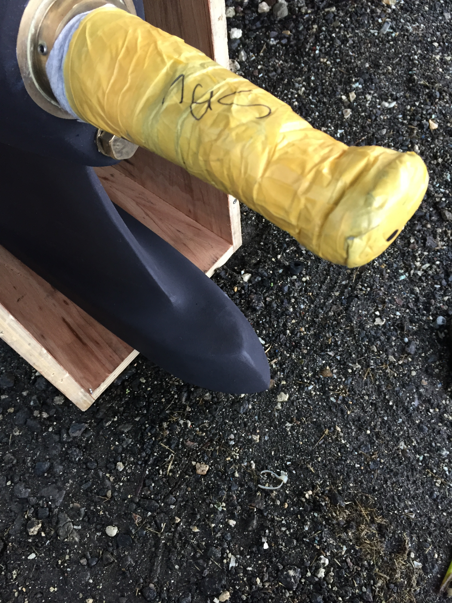
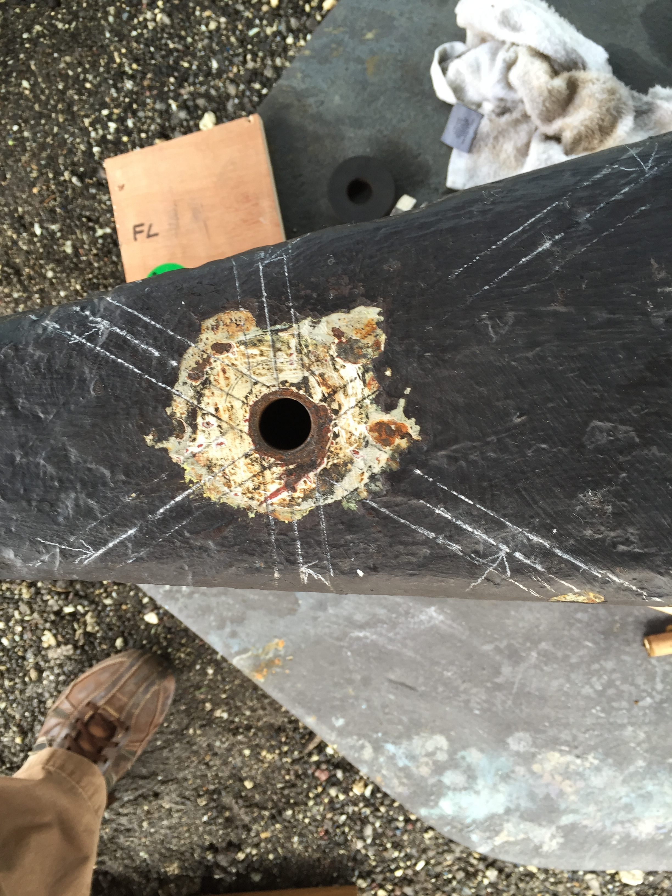
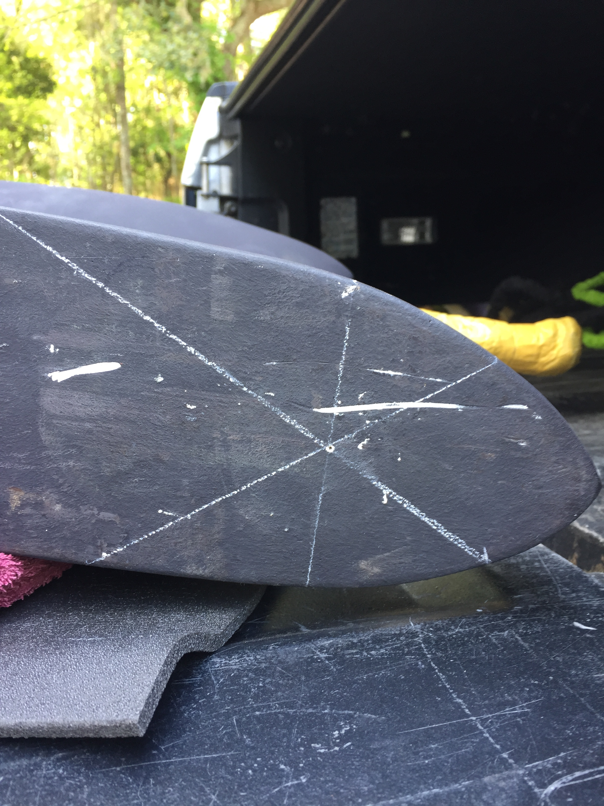
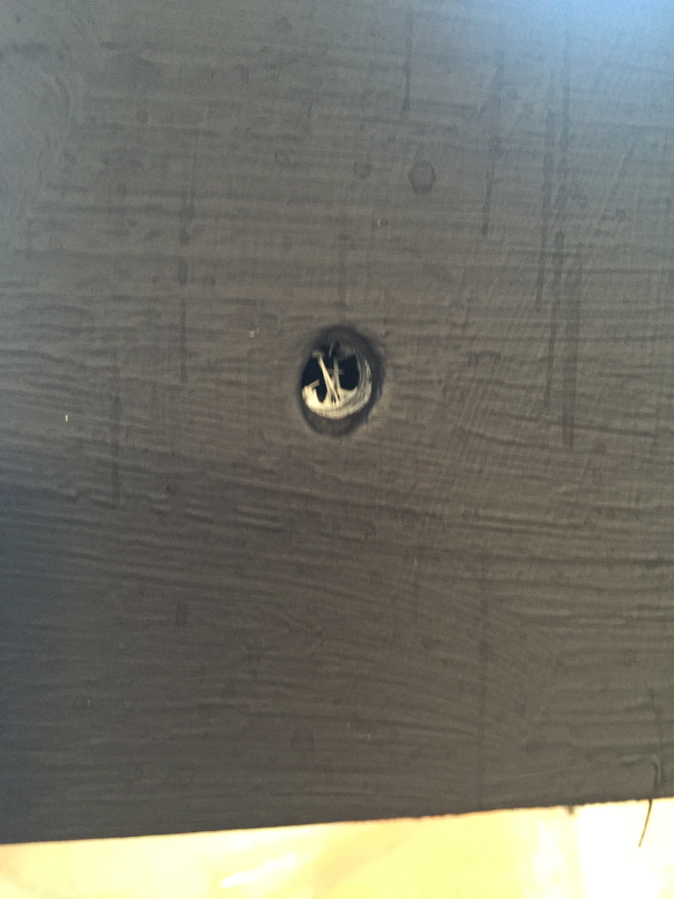
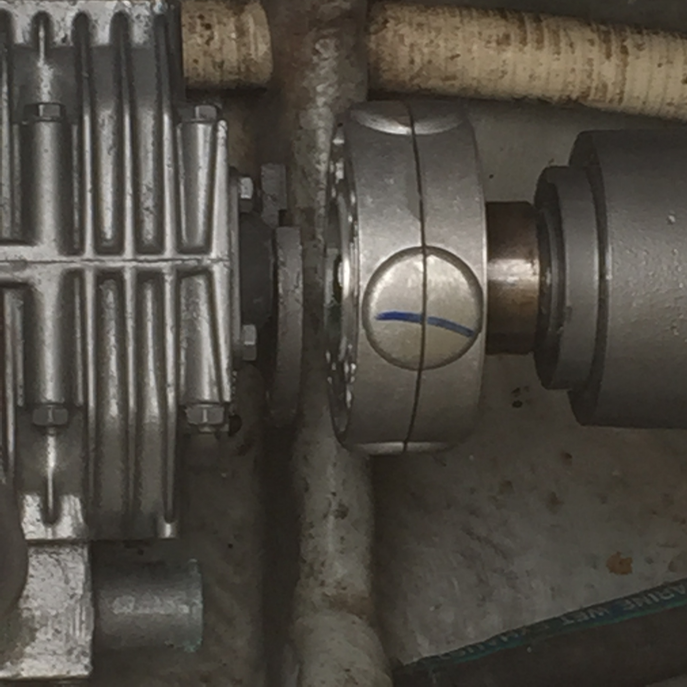
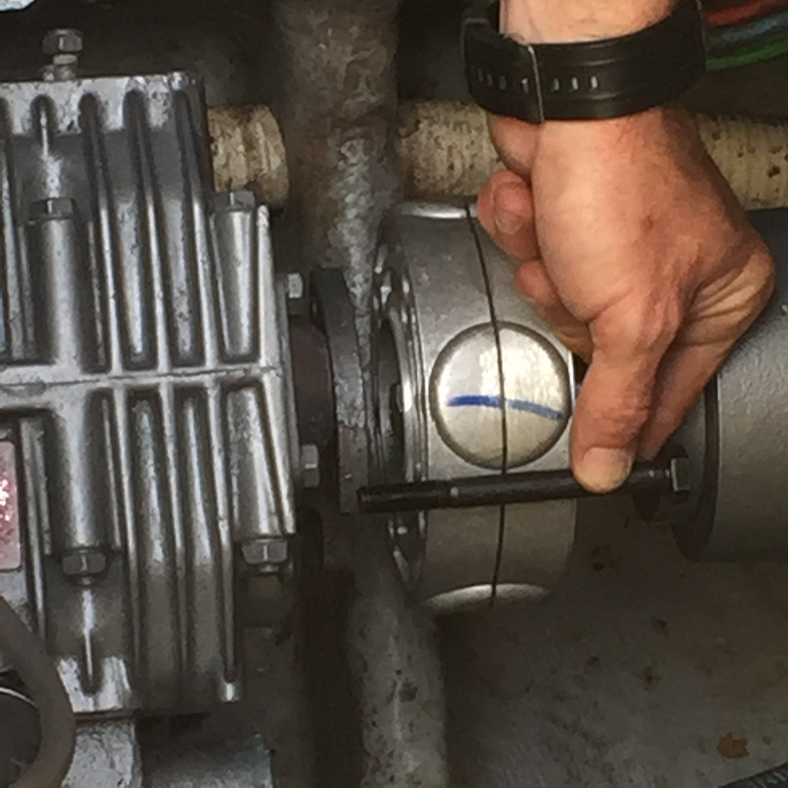
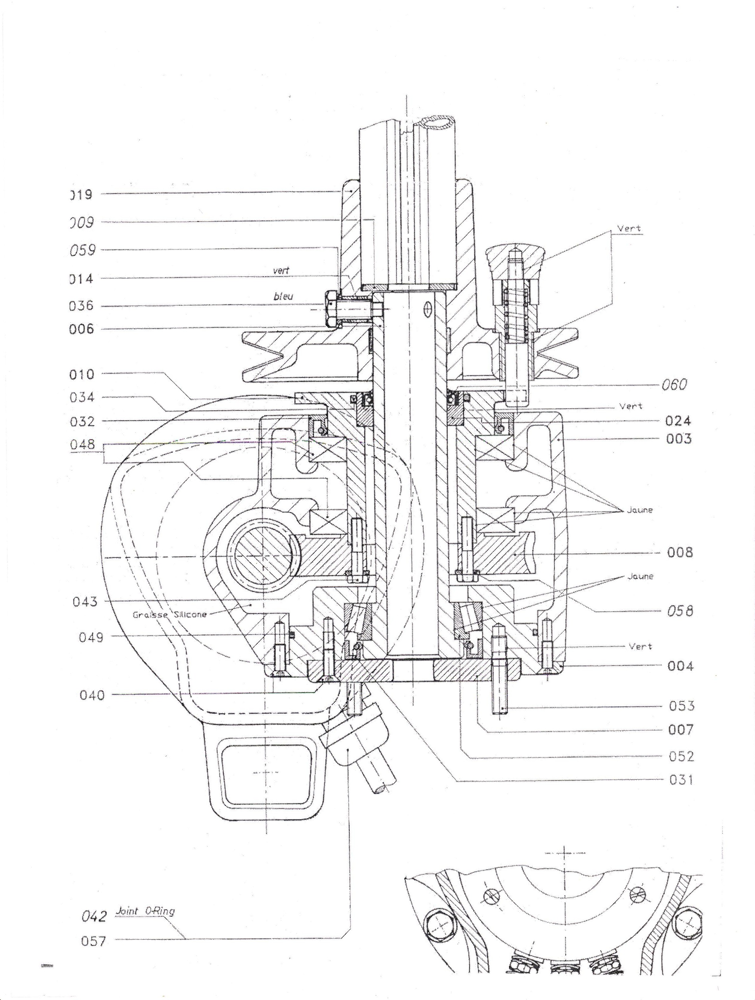
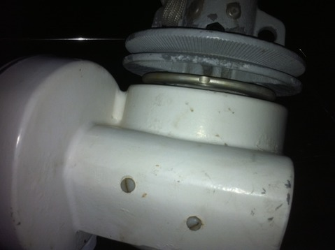
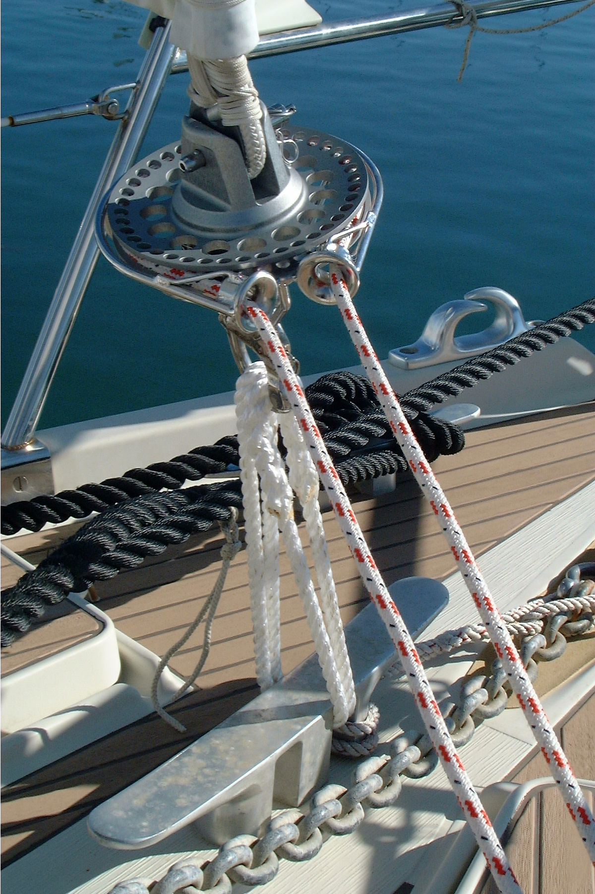
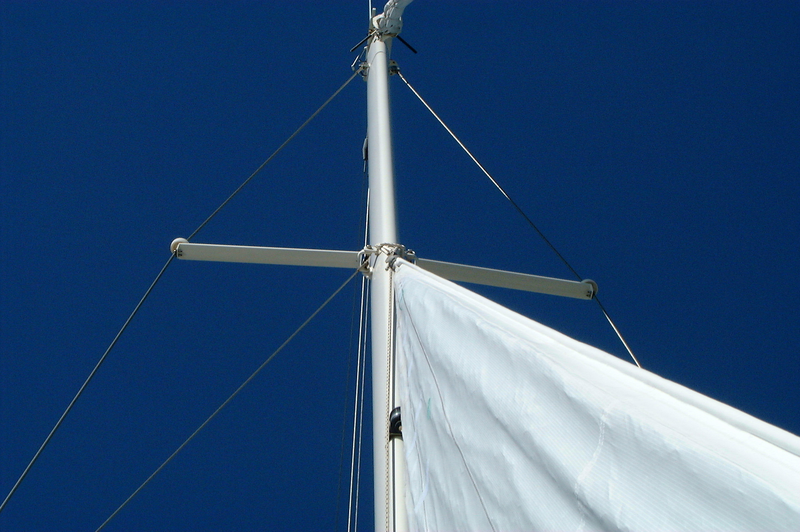

Indice wiki tecnica AMEL Super Maramu 2000
00 — Indice wiki tecnica AMEL Super Maramu 2000
Wiki tecnica per manutenzione, imprevisti e lavori. Ogni pagina cita le fonti.
| # | Pagina | Contenuto |
|---|---|---|
| 01 | Scheda tecnica | Dati barca: motori, serbatoi, elettricità, alberatura, particolarità |
| 02 | Motore Yanmar 4JH3-HTE | Motore principale 100 CV + manutenzione |
| 03 | Volvo MD22/TMD22/TAMD22 | Workshop manual: coppie, regolazioni, diagnostica |
| 04 | Generatore Onan 7 kW | MDKAV: specifiche e uso |
| 05 | Impianto elettrico | 24/220/12 V, batterie, massa anti-elettrolisi |
| 06 | Bow thruster | Uso, ricambi con codici, revisione completa passo-passo |
| 07 | Trasmissione ed elica | Trasmissione AMEL, AUTOPROP H6, albero elica, tagliacime |
| 08 | Avvolgibili e sartia | Fiocco/randa/mezzana avvolgibili + riparazione furler box |
| 09 | Carrello boom extension | Ricostruzione carrello con piste a sfere |
| 10 | Pompa Calpeda | Sostituzione tenuta meccanica |
| 11 | Idraulica, acqua, WC | Presa a mare, sentina, dissalatori, svernaggio |
| 12 | Optional | Elenco opzioni v2.5 + Comfort Pack + stufa Eberspächer |
| 13 | Manutenzione programmata | Calendario giornaliero → 5 anni, alaggio, svernaggio |
| 14 | Guasti e diagnostica | Sintomo → causa → rimedio |
| 15 | Check-list operative | Bordo, uscita, porto, vela, ancora, inverno |
| 16 | Risorse online | supermaramu2000.com: procedure, manuali PDF, ricambi con part number |
| 17 | Batterie LiFePO4 | Misure vano, config max 600 Ah, marche, costi, lavori collegati |
Fonti (fonti/testo-estratto/)
| Documento originale (PDF) | Lingua | Note |
|---|---|---|
| manuale super maramu italiano pdf.pdf | IT | Traduzione automatica Google del Users Guide EN v2.9 — nessun contenuto aggiuntivo |
| amel_super_maramu_2000_Users_Guide_CP.pdf | EN | Users Guide v2.9 ott. 2004 — fonte principale |
| …Users_Guide_CP…compressed.pdf | EN | Stesso contenuto del precedente (copia compressa) |
| amel_super_maramu_2000_Optional_equipment.pdf | EN | Opzioni v2.5 nov. 2002 |
| volvo_tmd_22_workshop_manual.pdf | EN | Workshop manual MD22/TMD22/TAMD22 04-1999 |
| Bow Thruster overhaul Nikimat….pdf | EN | Resoconto pratico revisione thruster (#289, 2013) |
| bow_thruster_overhaul_gary_silver_bill.pdf | EN | Procedura di riferimento thruster (#335/#BeBe) |
| Furler Box shaft removal….pdf | EN | Estrazione albero furler outhaul (2013) |
| boom extension car….pdf | EN | Ricostruzione carrello boma |
| calpeda_pump_shaft_seal_replacement.pdf | EN | Tenuta meccanica pompa |
| Amel_Electrical_SM2k_OM_Appendix_4_el_Drawing_Part2.pdf | — | Solo immagini/scansione: nessun testo estraibile (7 pagine). Da integrare con schema elettrico leggibile |
Convenzioni
- Lingue multiple nei documenti = bene: le versioni in lingue diverse vengono confrontate tra loro per validare dati e procedure; le differenze vengono segnalate nelle pagine wiki.
- I testi estratti restano in
fonti/testo-estratto/come riferimento citabile. - Nuovi documenti: trascina i PDF nella chat → estrazione testo → nuova pagina wiki o aggiornamento di quelle esistenti.
Scheda tecnica AMEL Super Maramu 2000
01 — Scheda tecnica AMEL Super Maramu 2000
Fonti: Users Guide v2.9 (EN) (copia locale), Owner's Manual SM2K (EN) (copia locale), Optional equipment v2.5 (EN), gruppo AmelYachtOwners
Motore e generatore
| Voce | Valore |
|---|---|
| Motore principale | Yanmar 4JH3-HTE, diesel turbo intercooler, 4 cil. in linea, iniezione diretta |
| Cilindrata / potenza | 1.995 cm³ — 73,6 kW (100 CV) @ 3.800 giri |
| Minimo | 900 ± 25 giri/min |
| Consumi (scafo pulito) | 1.800 giri / 6,5 kn = 3,9 l/h · 2.000 giri / 7 kn = 5,5 l/h |
| Generatore | Onan MDKAV 7 kW, 50 Hz ± 1 Hz, 1.124 cm³ @ 1.500 giri, consumo ½ carico ~2 l/h |
Serbatoi
| Serbatoio | Capacità | Ubicazione |
|---|---|---|
| Gasolio | 600 l (inox) | Sala macchine tribordo; astina, 2 portelli ispezione, sensore livello |
| Acqua dolce | 1.000 l | Chiglia; rabbocco dal pozzetto sotto il volante |
| Scaldabagno | 45 l | Riscaldato da motore (~20 min) o resistenza 220 V (~2 h) |
Consiglio manuale: per navigazione costiera bastano 400 l gasolio + 400 l acqua (prestazioni migliori a vela).
Elettricità
- Impianto principale 24 V CC; strumenti 12 V via trasformatore 24/12 V sotto il tavolo carteggio; 220 V da shore power o generatore.
- Caricabatterie 30 A (shore) e 100 A (da generatore).
- Batterie piombo-calcio senza manutenzione, terminali inox. Vita utile: max 4 anni se sempre a terra con shore power, ~18 mesi se navigazione/all'ancora (si guastano perché poco caricate). Recupero batteria scarica: carica individuale 14–16 V, 10–20 A.
- Regime consigliato in navigazione: 3 sessioni generatore/carica da 1,5–2 h (mattina, 13–14, 19–20); all'ancora 3–4 h/giorno.
Consumi tipici 24 V
| Utente | W | A nominali | A picco |
|---|---|---|---|
| Bow thruster | 7.000 | 570 | — |
| Winch scotta fiocco (×2) | 3.000 | 70 | 200 |
| Winch scotta randa | 1.700 | 50 | 120 |
| Verricello ancora | 1.200 | 36 | 95 |
| Avvolgifiocco | 2.000 | 50 | 100 |
| Motore avvolgimento randa | 450 | — | — |
| Bugna elettrica randa | 450 | 50–100 | — |
| Pilota automatico | 250 | — | — |
| Dissalatore | 370 | — | — |
| Frigo / congelatore | 100 / 60 | — | — |
Consumi tipici 220 V
| Utente | W |
|---|---|
| Lavatrice/asciugatrice | 1.300 |
| Lavastoviglie | 2.000 |
| Clima (risc./raffr.) | 1.300 / 925 (+pompa 370) |
| Scaldabagno | 750 |
| Microonde | 1.300 (2.800 con grill) |
| Caricabatterie 30 A / 100 A | 1.500 / 2.400 |
Alberatura e vele
- Riggo ketch: fiocco su forestay avvolgibile, randa avvolgibile in albero, mezzana avvolgibile in albero, bugna elettrica sul boma.
- 5 vele triradiali: 3 Dacron (fiocco, randa, mezzana) + 2 nylon (ballooner + ballooner di mezzana). Ispezione velaio ogni 5.000 miglia.
- Doppio tangone AMEL: portata fino a 170°; oltre 15 nodi di vento reale si arrotolano insieme fiocco e ballooner; ballooner di mezzana fino a 15 kn tra 80° e 150°.
- Triatico isolato elettricamente di serie (utilizzabile come antenna).
Misure vele e rig — documento Amel "Sails dimensions of the Super Maramu" (TB 12/7/2011) ★★★
| Vela | Area m² | Luff m | Leech m | Foot m |
|---|---|---|---|---|
| Fiocco (jib) | 67 | 16,98 | 16,57 | 8,25 |
| Randa | 35 | 15,50 | 15,91 | 4,52 |
| Ballooner | 68 | 16,60 | 16,40 | 8,20 |
| Mezzana | 19 | 11,29 | 11,53 | 3,22 |
| Ballooner di mezzana | 35 | 11,37 | 10,54 | 4,92 |
Rig: I 17,50 m · J 5,00 m · P 16,20 m · E 4,50 m · P mezzana 11,75 m · E mezzana 3,40 m. Documento originale
Cordiname (running rigging) — specifiche Amel via s/v Kimberlite ★★★
| Cima | Ø mm | Lunghezza m | Materiale |
|---|---|---|---|
| Drizza randa | 10 | 17,2 | Vectran |
| Scotta randa | 14 | 23 | Poliestere |
| Drizza fiocco | 12 | 39 | Vectran |
| Scotta fiocco | 16 | 41 | Poliestere |
| Bugna randa (boom rope) | 10 | 9,50 | Kevlar |
| Bugna mezzana | 10 | 11,50 | Poliammide trecciata |
| Carrello scotta fiocco | 10 | 10,50 | Kevlar |
| Carrello scotta randa | 10 | 11,50 | Kevlar |
| Gomena (tack rope) | 10 | 11,50 | Kevlar |
| Drizza mezzana | 10 | 15 | Poliestere |
| Scotta mezzana | 10 | 13 | Poliestere |
| Drizza ballooner mezzana | 10 | 28 | Poliestere |
| Scotta ballooner mezzana | 12 | 10 | Poliestere |
Tangone: blu Ø14×17 m (segno a 11 m) · punta rossa Ø14×9,5 m (segno a 7,35 m) · gialla Ø14×6 m (segno a 4,11 m) · bianca alta Ø10×16 m poliestere (segno a 12,75 m). Documento originale
Particolarità costruttive
- Bow thruster retrattile interamente in vetroresina (standard dal 1985): nessuna parte metallica immersa → immune da elettrolisi; elica con 6 viti nylon sacrificali Ø8 mm.
- Trasmissione AMEL a ingranaggi conici in bagno d'olio con freno idraulico: elica AUTOPROP in bandiera sotto vela.
- Paratie stagne: compartimento collisione, cabine prua/poppa rendibili stagne (porta stagna + barra di compressione + valvole dedicate), sala macchine stagna, pozzo catena stagno.
- Circuito di massa anti-elettrolisi + rilevatore dispersione di serie; piastre massa sul timone per SSB.
- Un'unica presa a mare centralizzata con filtro sorvegliato da allarme; fascette doppie sui tubi mare.
- Attacco prua per 2 ancore, verricello 1.200 W con contacatena induttivo (~10% precisione).
- Winch elettrici Lewmar: 2× 58 ST scotta fiocco, 1× 40 ST scotta randa (usabili anche a mano).
- Cassaforte con codice in cabina poppa; numero scafo inciso in discesa e falchetta poppa-tribordo.
Dimensioni principali
| Voce | Valore | Fonte |
|---|---|---|
| LOA | 16,00 m (52,49 ft) | boatsector.com / sailboatlab.com ★★★ |
| Lunghezza galleggiamento | 12,60 m (41,33 ft) | idem ★★★ |
| Baglio | 4,60 m (15,08 ft) | idem ★★★ |
| Pescaggio | ~2,03 m (6,67 ft) | idem ★★★ |
| Dislocamento | 16.000 kg (35.274 lb) | idem ★★★ |
| Ballast | 5.502 kg (34,4% del dislocamento) — wing keel | idem ★★★ |
| Superficie velica | 118,92 m² (1.280 ft²) | idem ★★★ |
| Velocità scafo teorica | 8,61 kn | idem ★★★ |
| Rapporti | SA/D 19,12 · comfort ratio 32,90 · capsize screening 1,84 | idem ★★★ |
Particolarità costruttive (scafo/alberatura)
- Albero in alluminio a ponte (a differenza del Super Maramu precedente, che aveva l'albero in vetroresina); profili forestay avvolgibile in alluminio.
- Passerella integrata a poppa.
- Scafo in vetroresina monolitico; chiglia a pinna con bulbo ad ala (wing keel).
Motore principale Yanmar 4JH3-HTE
02 — Motore principale Yanmar 4JH3-HTE
Fonte: Users Guide v2.9 (EN), Optional equipment v2.5 (EN)
Specifiche
| Voce | Valore |
|---|---|
| Tipo | Diesel turbo intercooler, 4 tempi, 4 cil. verticali in linea, iniezione diretta |
| Cilindrata | 1.995 cm³ |
| Potenza | 73,6 kW (100 CV) @ 3.800 giri/min |
| Minimo | 900 ± 25 giri/min |
| Raffreddamento | Acqua dolce con scambiatore di calore |
| Alternatore motore | 12 V / 55 A |
| Alternatore servizi | 24 V / 55 A (con Comfort Pack: 24 V / 175 A, carica da 1.500 giri) |
| Arresto emergenza | Leva rossa sulla pompa d'iniezione (manuale) |
Consumi (scafo pulito)
| Regime | Velocità | Consumo |
|---|---|---|
| 1.800 giri (crociera economica) | 6,5 kn | 3,9 l/h |
| 2.000 giri (crociera) | 7 kn | 5,5 l/h |
Manutenzione (dal calendario Users Guide)
| Intervallo | Interventi |
|---|---|
| Ogni 200 h o 1 anno | Olio + filtri motore; girante pompa acqua mare; cinghie; serraggio bulloni; olio cambio (ATF); liquido refrigerante; supporti gomma; filtro aria |
| 500 h totali o 1 anno | Cartuccia filtro RACOR 30 micron + pulizia decantatore |
| 4 anni | Liquido raffreddamento; olio cambio ATF |
Vedi anche: 11 — Manutenzione programmata, 07 — Trasmissione ed elica.
Nota sul manuale Volvo TMD22 presente in archivio
L'archivio contiene il workshop manual della famiglia Volvo Penta MD22/TMD22/TAMD22 (03). Il Users Guide indica come motore standard/Comfort Pack lo Yanmar 4JH3-HTE: verificare quale motore è effettivamente installato sulla barca prima di applicare i dati Volvo (coppie, regolazioni). I due manuali NON sono intercambiabili.
Motore Volvo Penta MD22 / TMD22 / TAMD22 (workshop manual)
03 — Motore Volvo Penta MD22 / TMD22 / TAMD22 (workshop manual)
Fonte: Workshop manual "Engine Repair, Marine Engines MD22 • TMD22 • TAMD22", pubbl. 7738684-5, 04-1999 (EN) Varianti coperte: MD22A, MD22L-A/B, MD22P-B, TMD22A/B/P-C, TAMD22P-B
⚠️ Il capitolo "Technical Data" (cilindrata, potenza, giochi assiali, pressione iniettori, termostati) NON è nell'estrazione. Verificare motore installato: la barca del Users Guide ha uno Yanmar 4JH3-HTE.
Architettura
- 4 cilindri in linea, 2 valvole/cil., blocco ghisa senza camicie, testa alluminio con alzo a bicchiere + shims.
- Albero motore ghisa sferoidale, 5 supporti, spinta assiale su semirondelle al supporto centrale.
- Distribuzione a cinghia dentata; pompa iniezione Bosch con pulegga a due scanalature: dente "A" = aspirati, dente "B" = turbo.
- Volano: corona 104 denti. Riduttori citati: MS25, HS25, MS2, 120S, HBW250, SX-drive.
- Turbo con wastegate non regolabile (se difettosa si cambia il turbo): corsa stelo 0,38 mm @ 89–97 kPa (TMD22); 1 mm @ 135 kPa (TAMD22).
Coppie di serraggio (Nm)
| Giunto | Coppia |
|---|---|
| Viti testa | 50 → 100 → +90° (sequenza; max 4 ritorni) |
| Dadi bielle (dado sempre nuovo) | 47 |
| Viti supporti banco | 112 (a gradini) |
| Vite centrale puleggia albero (3581332) | 180 |
| Dado pulegga pompa iniezione | 60 |
| Volano | 65 |
| Candele preriscaldamento (grasso HT) | 20 |
| Tappo scarico coppa olio | 43 |
| Coperchio camme | 22 |
| Pulegga camme: vite centrale / mozzo | 85 / 22 |
| Tenditore cinghia (viti bombate) / folle | 45 / 43 |
| Tubi alta pressione iniettori | 18 |
| Scambiatore/marmitta alla testa | 22 |
Generale: M5=5 · M6=10 · M8=20 · M10=40 · M12=70 · M14=115. Controdadi Nylock ≥M8: −25%.
Regolazioni
Gioco valvole (motore freddo, camma-bicchiere)
- Aspirazione 0,25–0,35 mm · Scarico 0,35–0,45 mm
- Con shims calcolare per 0,30 asp / 0,40 scar
- Sequenza camme: 1+3 → 2+5 → 6+8 → 4+7
Cinghia distribuzione (tensimetro 885036)
- Nuova: 425–465 N · Usata: 340–370 N
- Se usata scende ≤ 270 N → riportare a 340–370 N; ricontrollare fase pompa dopo 2 giri
Anticipo pompa iniezione
- Comparatore sul tappo posteriore, precarico ~3,0 mm, azzerato al PMI
- Al PMS cil.1 lettura = alzata nominale ± 0,05 mm; correzione ruotando la pompa (orario visto da dietro = aumenta)
Limiti usura principali
| Punto | Limite |
|---|---|
| Piano testa | deformazione > 0,10 mm = rettifica; altezza min. 119,85 mm |
| Guida valvole | gioco stelo max 0,13 mm; sporgenza 10 mm |
| Perni albero | usura/ovalizzazione max 0,03 mm; rettifica −0,3 mm |
| Cilindri | ovalizzazione max 0,15 mm; noiosura +0,50 mm (pistoni classe X) |
| Volano | eccentricità < 0,30 mm; battuto ≤ 0,03 mm ogni 25 mm raggio |
| Regime max | dall'ultimo numero targhetta pompa (es. …/3200 = 3200 rpm); vite esterna sigillata |
Sistemi
- Lubrificazione: pompa rotori (10/11 denti), filtro sul corpo pompa (solo originali), valvola relief non tarabile. Filtro nuovo: riempirlo d'olio, ungere guarnizione, serrare a mano.
- Raffreddamento: circuiti chiuso+mare; scambiatore+marmitta+espansione in un'unica unità a dritta. Pompa circolazione mossa dalla cinghia di distribuzione. Anodo sacrificale. Inserto scambiatore estraibile se spazio ≥ 555 mm.
- Alimentazione: pompa membrana; gasolio dal foro nel corpo = membrana rotta. Prova: manometro 0–70 kPa, 10 s avviamento; sostituire se <75% della minima o dimezza in <30 s. Spurgo: vite sopra filtro + leva manuale, poi dadi iniettori.
- Elettrico: alternatore Valeo A13N147M 60 A (14 V); motorino con spazzole min 3,5 mm; candele: picco 27 A → 14 A dopo ~10 s, 11–12 V.
- Turbo: dopo montaggio versare 100–140 ml olio nel corpo, pre-lubrificare col motorino, primi 3–4 min a basso regime. Mai spray di avviamento, mai senza filtro aria.
Diagnostica rapida
| Sintomo | Verifica |
|---|---|
| Cilindro "morto" | Allentare i dadi tubi uno a uno a minimo alto: quello che non fa variare i giri è colpevole |
| Parte e si ferma / irregolare | Aria nel bassapressione → cercare perdita, spurgo completo |
| Fumo nero + calo potenza a 2500 rpm | Wastegate tarato basso |
| Consumo olio elevato | Vetratura canne → Flex-Hone + segmenti |
| Spia carica / batteria scarica | Procedura alternatore: 14 V costanti con carico 10–15 A |
| Motorino lento, lampade brillanti | Switch/cavi/connesse, non il motorino |
Attrezzi speciali Volvo Penta
885036 tensimetro cinghia · 885037 perni di fase · 884955 comparatore anticipo (885139 per TMD22P/TAMD22) · 885027 estrattore pulegge · 885028 chiave elettrovalvola stop. Sigillanti: Loctite 574/572/241/243/648, Volvo 840879-1, 1161099-5, Permatex No.3/No.77. Grasso Shell Alvania R2.
Intervalli di manutenzione
Non presenti nel workshop manual: seguire il Maintenance Schedule Volvo Penta dedicato (obbligatorio per motori certificati). Pompa iniezione e iniettori solo officina autorizzata.
Generatore Onan MDKAV 7 kW
04 — Generatore Onan MDKAV 7 kW
Fonte: Users Guide v2.9 (EN)
Specifiche
| Voce | Valore |
|---|---|
| Modello | Onan MDKAV 7 kW, campo rotante 4 poli |
| Frequenza | 50 Hz ± 1 Hz |
| Motore | Diesel 3 cil. in linea, 1.124 cm³ @ 1.500 giri/min |
| Consumo | ~2 l/h a mezzo carico |
| Raffreddamento | Scambiatore di calore |
| Alternatore carica batterie | 10 A |
| Ubicazione | Sala macchine, lato sinistro |
| Avviamento | Da cambusa o quadro sala macchine |
Uso consigliato in navigazione
3 sessioni da 1,5–2 h al giorno (mattina, ~13–14, ~19–20), totale 5–6 h; all'ancora 3–4 h. Il generatore alimenta il caricabatterie 100 A e tutti i carichi 220 V.
Limiti a 60 Hz / 110 V
Con trasformatore 110/220 V 6.000 W (opzione) non funzionano a 60 Hz: dissalatore, microonde, lavatrice/asciugatrice, lavastoviglie → usare il generatore.
Manutenzione
Stessi intervalli del motore principale: olio+filtri ogni 200 h/1 anno, cartuccia RACOR 500 h/1 anno, liquido raffreddamento ogni 4 anni, risciacquo circuito mare in svernaggio.
Impianto elettrico
05 — Impianto elettrico
Fonte: Users Guide v2.9 (EN), Optional equipment v2.5 (EN)
Architettura
- 24 V CC impianto principale · 220 V da shore power o generatore · 12 V per strumenti via trasformatore 24/12 V sotto il tavolo da carteggio.
- Quadro 24 V in cucina: pompa sentina, generale bow thruster, shut-off elettrico gas, interruttori batterie Marche/Arrêt.
- Quadro 220 V: elettrodomestici, clima, scaldabagno, caricabatterie.
- Regola: non lasciare mai carichi 220 V attivi con barca incustodita per giorni.
Batterie e carica
- Piombo-calcio senza manutenzione, terminali inox.
- Vita utile: max 4 anni se sempre a terra con shore power; ~18 mesi se navigazione/all'ancora (si guastano perché poco caricate).
- Recupero batteria scarica: carica individuale 14–16 V, 10–20 A.
- Caricabatterie: 30 A (shore, opzionale) / 100 A (da generatore).
- Comfort Pack: 12 batterie 12 V/105 Ah serie-parallelo = 630 Ah @ 24 V.
Sicurezza anti-elettrolisi
- Circuito di massa dedicato: tutte le parti a contatto con l'acqua collegate (cavo verde/giallo) agli anodi di zinco del timone.
- Rilevatore di dispersione sulla paratia della discesa (posizioni "Masse +"/"Masse −"): individua perdite verso positivo/negativo dell'impianto interno (non verso gli alberi). Verificare almeno 2 volte/anno.
- Anodi zinci: ispezione ogni 6 mesi, sostituzione annuale.
- Piastre di massa sul timone/skeg per SSB: da scollegare dagli anodi se installata la SSB.
- WD-40 sui connettori dei quadri (manutenzione annuale).
Opzioni energia (Optional equipment)
| Opzione | Dettagli |
|---|---|
| Trasformatore 110/220 V 6.000 W | Sala macchine sinistra; a 60 Hz non funzionano dissalatore/microonde/lavatrice/lavastoviglie |
| Inverter 24/220 V | Non per grossi carichi: microonde fa scattare la protezione dopo 3–4 min (limite voluto) |
| Alternatore albero elica | Fino a 20 A, efficiente da 7 kn; disinseribile vicino alla trasmissione; mai innestato con motore in marcia; spia verde OK / rossa rotazione insufficiente |
Consumi
Vedi tabelle complete in 01 — Scheda tecnica. Picchi notevoli: bow thruster 570 A, winch fiocco fino a 200 A → usare con motore/generatore+caricabatterie attivi.
Bow thruster retrattile
06 — Bow thruster retrattile
Fonti: Users Guide v2.9 (EN) · Gary Silver #335 / Bill Rouse "BeBe" (EN, 2007/2010, procedura di riferimento) · rapporto NIKIMAT #289 (EN, 2013)
Descrizione e uso
- Standard AMEL dal 1985; interamente in vetroresina (GRP) → nessuna parte metallica immersa, immune da elettrolisi.
- Movimento su/giù con martinetto elettrico su cavi e pulegge; elica in poliestere con 6 viti nylon Ø 8 mm sacrificali (si rompono con una cima: si perde l'elica, non il thruster; sostituibile senza immersione con attrezzo AMEL).
- Motore elettrico 6 kW 24 V. Uso solo in porto, max 30 s consecutivi, non invertire rotazione prima dell'arresto (~1 s). Più efficiente con motore/generatore + caricabatterie 100 A attivi.
- In mare aperto: bloccare con perno inox (l'interruttore nella sede del perno toglie alimentazione).
- Compartimento parzialmente stagno con scarico a gravità verso sentina (valvola sotto il thruster).
- Contiene 0,3 l di olio SAE 90.
- A secco: aprire interruttore generale e scollegare la spina sopra il lavello.
Ricambi (codici)
| Pezzo | Codice | Note |
|---|---|---|
| Guarnizioni schiuma neoprene (3 pz) | 110×60 | Dal 2015 tutte e 3 uguali |
| Cuscinetti (3 pz) | 6006 JEM (aperto) | Da 2016: 2 chiusi 6006 2RS + 1 aperto |
| Paraolio albero | 30×42×8 | Da 2016 Amel consiglia 29×42×8 |
| Paraolio interno | 60×80×12 | Si monta dall'interno, cabina prua |
| O-ring | 78,00×3,00 | |
| O-ring | 40,00×2,50 | |
| Cuscinetto motore elettrico | 6204 2RS JEM | In alto lato motore; mai sostituito |
| Olio | SAE 90, 0,3 l |
Strumento critico: "Amel Special Tool" in legno, galleggiante, per la rimonta in acqua.
Procedura revisione (in acqua o in secco)
Il gruppo piede pesa ~15 lbs (6 kg): fibra di carbonio e vetroresina. Tempo alla prima esperienza: 2 persone × 4 mezze giornate.
- Rimuovere materassi; doppia protezione zona; marcatura del thruster.
- Fascione (band clamp) attorno all'alloggiamento nero con corda a una bitta = sicurezza anticasco.
- Asciugamani per non perdere pezzi; servono pinze a 90°.
- Abbassare il thruster di 1 pollice per scaricare le tenute.
- Togliere il band clamp dalla base del motore (bussola 13 mm); poi le 4 viti esagonali con rondelle elastiche: tolta l'ultima il piede cade → sostenere o montare lo strumento Amel (sigillare giunto con nastro, calare con corda; in secco scala/sostegno).
- Se cade un pezzo in sentina: provare togliendo il coperchio sopra il condizionatore.
- Capovolgere l'unità e scaricare l'olio in un secchio. Olio lattiginoso = acqua dentro: sciacquare più volte con solvente minerale/Stoddard finché chiaro, far drenare ore.
- Rimuovere guarnizione schiuma interna + 2 guarnizioni incollate (colla da contatto) sulla calotta antitorzione. Quella interna è diversa dalle altre due.
- Tenuta labbro superiore del pozzo: 2 viti di ritenzione; collassare il labbro con cacciavite; nuova tenuta imbottita di grasso fissata con RTV.
- Tenuta labbro dell'albero elica: slide hammer + viti minuscole. Punta da 1/16", perforare lentissimamente (la sede è in vetroresina). Fissare con RTV. Trucco (Colin Streeter #332): premere la nuova tenuta con filo piatto di lima finché sporge ~3 mm sotto il bordo esterno → sigilla perfettamente (test 2,5 h SAE90 senza perdite).
- Estrazione cuscinetti: uno a mano, l'altro con estrattore proteggendo la plastica tenera con 4–5 monete. Montaggio: martello di gomma + tubo PVC; serve molta forza (NIKIMAT ha usato una gru idraulica d'auto).
- Trattare anticrosalivamente le zone del fondo motore; antivegetativa sull'unità (attenzione ad alcuni punti).
- Versare 0,3 l SAE 90; grasso intorno all'albero; colla da contatto sulla guarnizione schiuma; distanziale circolare.
- Remozione: paraolio e guarnizione passano attraverso lo strumento Amel (grasso sul paraolio; piccolo peso subacqueo sullo strumento perché galleggia). Per rivitare può servire abbassare leggermente il motore elettrico.
- Riallineamento: le tenute nuove non compresse cambiano la quota di ritrazione → tirare il filo anteriore destro per comprimere le guarnizioni e allineare il foro del perno, poi inserire il perno.
Consigli pratici
- Nastro adesivo comune meglio del rescue tape per sigillare i fori durante la calata (il rescue tape è troppo spesso per il pozzo).
- Nastro blu sul trapano per forare le viti di ritenzione solo alla profondità giusta.
- Bilanciamento: troppo peso a prua → barca a ~3 cm dall'acqua (pericoloso); dopo ribilanciamento ~7 cm.
Trasmissione AMEL, elica AUTOPROP e albero elica
07 — Trasmissione AMEL, elica AUTOPROP e albero elica
Fonti: Users Guide v2.9 (EN), Optional equipment v2.5 (EN)
Trasmissione AMEL
- Davanti al riduttore idraulico: due coppie di ingranaggi conici in bagno d'olio → silenziosa e affidabile.
- Freno idraulico che blocca l'albero in navigazione a vela: l'elica si mette in bandiera (feathering) riducendo la resistenza.
- Giunto elastico in gomma antiurto.
- Olio: 8 l di 15W40, cambio ogni 2 anni; cambio 2 l ATF (ogni 4 anni o 800 h per bussola/guarnizioni albero).
Elica H6 AUTOPROP
- Tre pale in bronzo a bandiera automatica, Ø 566 mm, mano sinistra; ogni pala libera 360° (passo ottimale avanti/indietro).
- Elica fissa di scorta a 3 pale sotto la cuccetta tribordo di prua.
- Incrostazioni anche lievi → vibrazioni e calo giri: pulire e ingrassare con silicone (annuale).
Albero elica con alternatore (opzione)
- Fino a 20 A, efficiente da 7 nodi.
- Disinseribile elettricamente vicino alla trasmissione.
- Mai innestato con motore in marcia.
- Procedura d'innesto: motore avviato senza innesto → innesto in retro per aprire le pale → folle → eccitazione ON → motore spento.
- Spia verde = OK; rossa = rotazione insufficiente.
Tagliacime (opzione)
- Montato sull'albero elica; taglia automaticamente cima/filo avvoltosi all'elica.
- Manutenzione: solo pulizia e piccola affilatura in secca; guanti obbligatori; chiudere l'erogazione gasolio prima di intervenire.
Sostituzione C-Drive — sequenza fotografica (s/v Kristy SM#243, gruppo AYAO) ★★★
Documenti originali: C Drive Super Maramu · Kit isolamento Yanmar · Trasmissione in fonte
Sequenza foto dell'intervento (smontaggio → sostituzione → rimonta):






Avvolgibili, alberatura e sartia
08 — Avvolgibili, alberatura e sartia
Fonti: Users Guide v2.9 (EN) · rapporto NIKIMAT "Furler Box shaft removal" (EN, 2013)
Configurazione
- Ketch: fiocco su forestay avvolgibile, randa avvolgibile in albero, mezzana avvolgibile in albero, bugna elettrica sul boma.
- 5 vele triradiali: 3 Dacron + 2 nylon (ballooner + ballooner mezzana). Ispezione velaio ogni 5.000 miglia; pulizia professionale dopo 3–4 anni d'uso.
- Doppio tangone AMEL: fino a 170°; oltre 15 kn reali arrotolare insieme fiocco e ballooner; ballooner mezzana fino a 15 kn tra 80° e 150°.
- Triatico isolato elettricamente (antenna).
Avvolgifiocco
- Elettrico, comando in pozzetto; forestay ingrassato dentro il tubo (il grasso può colare nei paesi caldi; il motore è sigillato).
- Uso manuale di emergenza: sollevare il perno frizione e ruotarlo di ¼ di giro.
- Manutenzione annuale: ingrasso perno frizione; ogni 2 anni sistema di rilascio.
Randa in albero
- Sblocco manuale: allentare le 4 viti del motore e abbassarlo.
- Durante lo svolgimento tirare anche la bugna; drizze da tendere (babordo fiocco, tribordo randa) se compaiono pieghe.
- Bugna elettrica sbloccabile: vite superiore del bozzello + cima sulla bitta incorporata.
- Spazzole carboncine motori randa/boma: controllo annuale, ri-stagnatura ogni 2 anni.
Regole d'uso cantiere
- Non issare il fiocco sopravvento.
- Issare randa/mezzana tra 0 e 40° di vento per evitare sfregamenti sull'albero.
- Prima di ogni navigazione: verificare e provare tutti gli sblocchi di sicurezza degli avvolgibili.
Riparazione documentata — estrazione albero trasmissione furler/outhaul (NIKIMAT, 2013)
Sintomo: necessità di estrarre l'albero dalla trasmissione del furler dell'outhaul (motore elettrico collegato).
- Allentare il bullone inferiore (poi sostituirlo con uno molto più lungo, stessa filettatura).
- Cric idraulico d'auto sul ponte protetto da legno + piastra metallica.
- Sollevare lentamente: l'albero inizia a uscire; finire la spinta con il bullone lungo.
- Passaggi non fotografati: rimuovere le 4 viti della trasmissione (con motore elettrico attaccato) e i 3 bulloni scatola-motore.
- A lavoro concluso il motore elettrico viene assicurato all'albero (masto).
Trucco chiave: bullone allungato + cric come estrattore a spinta. Proteggere sempre il ponte.
Sostituzione sfere cuscinetti del swivel del forestay (Lady Annila SM#232, 1998) ★★★
Guida fotografica completa: PDF originale (Annsofie & Jonas Svanberg, sailinglife.se)
- Il swivel si smonta solo dopo aver rimosso motore/riduttore del furler (vedi sotto).
- Tre parti: tubo GRP interno, parte interna swivel, parte esterna. Cuscinetti superiore e inferiore su sfere Ø 9,5 mm, inserite da fori laterali chiusi da tappini plastici.
- Il tubo GRP è il consumabile tipico: dopo ~60.000 miglia usura ~0,5 mm; Amel lo fornisce comunicando il diametro del profilo alluminio del forestay.
- Rimontaggio: i due anelli plastici di guida vanno montati attorno alla cima dall'alto, dopo il reinserimento della cima nel riduttore.
Disegno del furler e piastra di innesto perno (dai documenti originali della cartella):


Smontaggio motore/riduttore furler fiocco ★★
Procedura forum AYAO (Craig, s/v Sangaris SN#68): documento originale
- Forare i rivetti che fissano l'estrusione al forestay.
- Rolling hitch sull'estrusione con la drizza fiocco → winch per staccarla dal suo alloggiamento.
- Rimuovere il motore elettrico (cavi collegati) e legarlo fuori ingombro.
- Legare il riduttore al pulpito PRIMA di allentare il tenditore; abbassare lentamente usando la staffa come fulcro.
- Svitare i 2 bulloni della staffa. Occasione buona per estrarre, pulire e ingrassare la cima.
⚠️ NON sostituire i rivetti con bulloni: Amel li ha progettati per cedere (come una spine) se si avvolge con la drizza ballooner bloccata — salvano l'estrusione.
Sartia volante / di emergenza ★★★
Documento tecnico produttore 595-305-E: PDF originale
- Posizione corretta: vicino alla testata, ~300 mm sotto il headbox, comunque sopra il 93% dell'altezza del forestay → sostenuta dall'astraggente, niente runner.
- Diametro uguale o uno sotto il forestay. Attacchi mast per occhi: Ø5 mm (517-904-01), Ø6 mm (517-905-01), Ø7–8 mm (517-911-01).
- Stivaggio: ripiegata davanti alle crocette, tirante leggero 4:1 per tenerla tesa e lontana da attriti.
Foto della trinquette (staysail) dai documenti originali:


Carrello boom extension (main boom car)
09 — Carrello boom extension (main boom car)
Fonte: rapporto NIKIMAT (EN)
Componente
Carrello principale del boom extension: piste a sfere, guscio superiore + 2 semigusci inferiori, gancio (shackle) su barra metallica.
Procedura ricostruzione
- Irrigare ogni bullone/dado (6 bulloni) con ZEP 45 e attendere.
- Smontaggio con bussola 5,5 mm e cacciavite. In pratica 5 bulloni su 6 si spezzano.
- Bulloni originali: 6-32 × 1″; dadi probabilmente M3. I 6-32 vanno bene comunque, solo più stretti da inserire.
- Estrarre i bulloni rotti: colpi di martello dal retro + chiave a morsetto (vice grip).
- Togliere coperchio superiore e semigusci inferiori; la barra del gancio scorre fuori.
- Montare il nuovo shackle Amel sulla barra (l'originale mancava della rondella plastica/nylon).
- Ripristino piste a sfere: un set diviso in 2 gruppi, sfere spinte una a una con un piccolo cacciavite lungo tutta la pista, prima un lato poi l'altro; ripetere capovolto per la pista inferiore.
- Rimontaggio coperchi con viti nuove 3 mm × 25 (a esagonale/incassato allen se non trovate Phillips).
- Loctite sui bulloni inferiori.
Consigli
- Tenere scorta di bulloni 3×25 con dadi.
- Se si ordina un carrello di ricambio (randa o mizzana), ordinare anche uno shackle extra: la spedizione non aumenta sensibilmente.
Pompa Calpeda: sostituzione tenuta meccanica
10 — Pompa Calpeda: sostituzione tenuta meccanica
Fonte: documento illustrato in 18 fotogrammi (modello pompa non specificato)
Sintomo
Perdita dalla pompa → sostituzione della tenuta meccanica dell'albero (shaft seal).
Procedura
- Smontare il corpo pompa.
- Estrarre la girante.
- Rimuovere la chiavetta di albero.
- Smontare il corpo posteriore: esce insieme alla vecchia tenuta.
- Pulire accuratamente tenuta e sede.
- Nuova tenuta = due parti: grafite a superficie specchiata (fissa) + parte rotante solidale all'albero.
- Immergere in acqua la parte in grafite e infilarla sull'albero con la superficie lucida rivolta verso di sé.
- Immergere in acqua anche la parte rotante e infilarla spingendola a mano fino in fondo.
- Spingere la parte rotante con un tubo, lasciando libero l'accesso alla sede della chiavetta.
- Reinserire la chiavetta con una pinza.
- Pulire la tenuta esterna del corpo pompa.
- Rimontare il corpo anteriore.
- Rimontare la girante bloccandola con doppio dado.
- Prima dell'uso: far girare l'albero qualche minuto a bassa velocità per assestare le superfici di tenuta.
Consigli
- Bagnare in acqua entrambe le facce della tenuta prima dell'infilaggio.
- Non dimenticare la chiavetta: la parte rotante deve lasciarne visibile la sede.
Idraulica, acqua e WC
11 — Idraulica, acqua e WC
Fonte: Users Guide v2.9 (EN)
Presa a mare (unica)
- Sala macchine, prua-tribordo: seacock in poliestere + valvola + filtro con cestello pulibile e sensore di ostruzione con allarme acustico/visivo in discesa.
- Anelli di serraggio dopati sui tubi acqua di mare.
- Distribuzione a: motore, generatore, WC prua e poppa, clima, dissalatore, lavaggio ancora.
Sentina
- Sump poppiera nella chiglia: raccoglie acque grigie di docce, lavello, lavatrici, gavone ancora.
- Pompa elettrica (aspira fino a 10 cm dal fondo, galleggiante + allarme guasto) e pompa manuale in pozzetto sotto il volante (manovella = gambo del tavolo del pozzetto; uso settimanale consigliato).
Acqua dolce
- Serbatoio 1.000 l nella chiglia; rabbocco dal pozzetto sotto il volante.
- Pompa acqua dolce in sala macchine (turbina in bronzo — non farla girare a secco).
- Pompa di emergenza sotto la lavastoviglie; livellino a tubo galleggiante in discesa.
- Filtro potabile SEAGULL IV (opzione): sotto lavello destro, cartuccia RS-1, 4 l/min, ~4.000 l o minimo annuale, microfiltrazione 0,4 µm.
Scaldabagno
45 l; riscaldato dal motore (~20 min) o resistenza 220 V (~2 h). Manutenzione: anodo annuale; pulizia interna da calcare + anodo magnesio ogni 3 anni.
WC elettrici
- Pompa a diaframma: sostituire in caso di perdite/mancanza aspirazione.
- Niente prodotti abrasivi/aggressivi; risciacquare con dolce dopo lunghi fermi.
- Serbatoi neri (opzione): vietato scaricarli in mare; svuotare solo in porti attrezzati; risciacquo con dolce + poco candeggina.
Dissalatori (opzioni)
| 50 l/h | 150 l/h | |
|---|---|---|
| Alimentazione | 220 V (via caricatore/gen.) o 24 V | Solo 220 V da generatore |
| Filtri | 5 µm | 25 µm + 5 µm |
| Pannello | In cucina sopra lavello sinistro: 3 spie qualità, ON/OFF, contatore ore, flussometro, manometro AP | 3 sezioni, 2 manometri BP/AP |
- Avvio: 1 min senza pressione poi taratura in zona verde; sensore qualità rigetta automaticamente l'acqua salata; eccesso pressione → spia rossa e arresto.
- Rubinetto a 3 vie: verticale = mare, orizzontale = risciacquo dolce.
- Svernaggio: risciacquo mensile o sterilizzante (+ glicerina); drenare il tubo di vetro del flussometro; sterilizzazione membrane annuale.
Svernaggio circuiti
Svuotare pompe/scaldabagno/rubinetti; 0,2 l candeggina nel serbatoio se a secco; 2 l antigelo per ogni WC; risciacquare i circuiti mare (motore, generatore, WC, clima, lavaggio ancora) con dolce/antigelo.
Serbatoi neri — schema impianto e problemi noti (gruppo AYAO)
Schema disegnato da Gary Silver (s/v Liahona SM#335): PDF originale ★★★
- Pump-out dal fitting pozzetto WC: aspirazione con guarnizione; il tubo verticale arriva quasi a fondo serbatoio → svuota completamente.
- Se la mandata si ottura si può sturare da sopra tramite il fitting pozzetto (standpipe e mandata sono allineati): niente accesso da sottobordo.
Corrosione manica in rame e rifacimento (ALETES SM#240, 2019): PDF originale ★★★
- Su alcuni scafi il raccordo verticale è una manica in rame vetrificata nel serbatoio: col tempo buca per corrosione → perdite esterne e, dentro, distacco del riser: i rifiuti finiscono sul FONDO del serbatoio e scolando il riser si svuota tutto nella vasca doccia.
- Difese anti-ritorno a 3 livelli (joker valve + valvola di ritegno + pompa manuale "locking") inefficaci nel tempo per incrostazioni calcaree.
- Soluzione radicale documentata: rimuovere tutto il rame, alesare il passaggio vetroresina (+2 mm di gioco), passare un tubo sanitario continuo dalla valvola vicino alla pompa fino a cima serbatoio, sigillare con resina epossidica versata tramite tubo PVC (putty sotto il giunto per trattenere la resina).
Dissalatore — membrane FilmTec
Manuale tecnico ufficiale DuPont FilmTec RO membranes (v7, ago 2021) per manutenzione approfondita membrane: PDF originale ★★★★
Optional Super Maramu 2000
12 — Optional Super Maramu 2000
Fonte: Optional equipment, sez. 7 manuale utente, v2.5 nov. 2002 (EN). Nessun prezzo riportato.
Energia
| Opzione | Dettagli |
|---|---|
| Caricabatterie 30 A | Da banchina; interruttore sul quadro 220 V |
| Caricabatterie 100 A (Comfort Pack) | 24 V/100 A da generatore |
| Trasformatore 110/220 V 6.000 W | Sala macchine sinistra; a 60 Hz non funzionano dissalatore/microonde/lavatrice/lavastoviglie |
| Inverter 24/220 V | Non per grossi carichi; microonde fa scattare la protezione dopo 3–4 min (limite voluto) |
| Alternatore albero elica | ≤20 A da 7 kn; mai innestato con motore in marcia; vedi 07 |
Acqua
- Serbatoi neri ×2 (vietato scarico a mare; svuotamento solo in porto; risciacquo dolce + candeggina)
- Dissalatore 50 l/h / 150 l/h → 11
- Filtro potabile SEAGULL IV, cartuccia RS-1 (~4.000 l)
Riscaldamento e ventilazione
Stufa a gasolio EBERSPÄCHER D5LC
- ~4.800 W max; 4 temperature + ventilazione; uscite aria: dinette, cabina prua, poppa.
- Consumo in 4ª ~0,58 l/h; unità nel bagno di poppavia sinistra; gasolio dal filtro decantatore (con shut-off); scarico a sinistra sullo scafo; presa d'aria in pozzetto (portacime, piede albero mizzen).
- Sicurezza: in caso di allagamento a prua o chiusura paratia stagna, chiudere l'uscita in cabina prua con la leva inox nella mensola sinistra della dinette (sopra la fluxgate). Non ostruire mai tutte le uscite insieme. Dopo lo spegnimento attendere 5 min prima di togliere il 24 V.
Ventilazione aria fresca
- Interruttore sotto il companionway; bocchette chiudibili in dinette/cabine; ~2 A @ 24 V; unità nel bagno di poppavia sinistra; stessa leva di chiusura emergenza.
Ventilatori girevoli
- Supporti multipli, 24 V, 2 velocità, spostabili tra ambienti.
Navigazione e coperta
- Luci di navigazione a livello ponte DHI: rosso 112,5° 25 W / verde 112,5° 25 W / bianco poppa 135° 10 W; interruttore "Navigation lights on deck" sul quadro 24 V.
- Pilota rotativo: commutatore in cucina sopra il lavello (pos.1 lineare, pos.2 rotativo, verticale = nessuno).
- 3ª drizza albero maestro a tribordo (gennaker/spinnaker).
- Tagliacime su albero elica → 07.
- Filtro gasolio RACOR doppio: selezione con shut-off tra i due filtri (mai entrambi insieme; verticale = entrambi chiusi).
Comfort
- 2° congelatore in dinette; interruttore sul quadro 24 V accanto al frigo.
- Televisione: amplificatore mensola destra, antenna in testa all'albero maestro.
- Compressore ossigeno BAUER J II 3W: bagno di poppavia sinistra; 24 V, 2,2 kW, 100 l/min, max 245 bar; interruttore "Compresseur" sul quadro 220 V.
- Chiusura companionway con piastra inox + 2 lucchetti (door locker).
Comfort Pack
| Elemento | Dettagli |
|---|---|
| Motore | Yanmar 4JH3-HTE 100 CV → 02 |
| Alternatore servizi | 24 V/175 A, carica da 1.500 giri |
| Batterie | 12× 12 V/105 Ah serie-parallelo = 630 Ah @ 24 V |
| Caricabatterie | 100 A da generatore |
| Cucina | Gas 4 fuochi (1,0 + 2×1,5 + 2,2 kW) + forno 1,8 kW (36 l) + grill 1,6 kW; butano; accensione elettronica 1,5 V DC; ricordare l'interruttore valvola sicurezza gas sul quadro 24 V |
Cucina e gas (standard)
Bombole con riduttore ciascuna; shut-off elettrico del gas sul quadro 24 V; filtro di ventilazione sopra il piano da ispezionare/sostituire; prima di qualsiasi intervento chiudere shut-off e riduttori.
Manutenzione programmata
13 — Manutenzione programmata
Fonte: Users Guide v2.9 (EN), calendario manutenzione
Calendario
| Intervallo | Interventi |
|---|---|
| Giornaliero | Stato di carica e metodo di ricarica batterie; pressioni mini/maxi acqua; livello acqua dolce |
| Settimanale | Pulizia filtro acqua di mare + ingrasso coperchio; prova leve seacock; detergente in sentina; controllo galleggiante pompa sentina; uso pompa manuale pozzetto |
| 200 h o 1 anno (motore E generatore) | Olio + filtri; girante pompa acqua mare; cinghie; serraggio bulloni; olio cambio (ATF); liquido refrigerante; supporti gomma; filtro aria |
| 500 h totali o 1 anno | Cartuccia RACOR 30 micron + pulizia decantatore |
| 6 mesi | Ispezione anodi zinci |
| Annuale | Anodi zinci; verifica dispersioni e continuità massa (rilevatore ≥2 volte/anno); ingrasso perno frizione avvolgifiocco; smontaggio+ingrasso gipsy verricello, risciacquo e controllo catena; pulizia sentina; anodo scaldabagno; pulizia scafo sottogalleggio + antivegetativa dura (non erodente, no vernice su sensori Sonic Speed/piastre massa/anodi); ingrasso silicone elica; WD-40 connettori quadri; filtri acqua potabile; sterilizzazione membrane dissalatore; controlli sartiame/tenditori/alberi; zattera/razzi/giubbotti; spazzole motori randa |
| 2 anni | Olio trasmissione AMEL (8 l 15W40) + bussola e guarnizioni albero elica (o 800 h); olio bow thruster (0,3 l SAE 90) + antivegetativa nel pozzetto; spazzole carboncine alberi/boma (ri-stagnare); sistema di rilascio avvolgifiocco |
| 3 anni | Pulizia interna scaldabagno (calcare) + anodo magnesio; pulizia professionale vele |
| 4 anni | Liquido raffreddamento motore e generatore; olio cambio ATF |
| 5 anni | Olio verricello; olio dissalatore; sostituzione seacock |
| Ogni 5.000 miglia | Ispezione vele da velaio |
| Dopo ogni crociera | Risciacquo vele e alberi (primi 4 m); asciugatura vele; vaselina nelle testine idrauliche; detergente in sentina |
Batterie — regola d'oro
Si guastano perché poco caricate: max 4 anni a terra con shore power, ~18 mesi in navigazione se non caricate abbastanza. Recupero: carica individuale 14–16 V, 10–20 A.
Scafo (alaggio)
- Sollevamento con bulloni a U prua/poppa, 4 cinghie ≥ 6 m, cavalletti a vite fortemente raccomandati.
- Idropulitrice: distanza ≥ 20 cm, pressione ≤ 80 bar (~1.130 PSI), getto a 45°, senza abrasivi.
- Riparazioni vetroresina solo a personale qualificato.
Svernaggio
Vele ritirate/fiocco in sacca dentro; risciacquo ponte (sotto alberi, avvolgibili, verricello, winch, antenna GPS); svuotamento circuiti dolce e WC (antigelo 2 l/WC); risciacquo circuiti mare con dolce/antigelo; perno bow thruster impostato; portelli bloccati.
Timone — rimozione e revisione (SM2K, guida fotografica Olaf Bauer 2020) ★★★
Guida completa 33 pagine: PDF originale
- Sintomo tipico: crepe del timone in basso su entrambe le lati (vetroresina degradata attorno all'anima).
- Esterno: supportare il timone con cavalletti + cric; aprire la staffa a U del cuscinetto centrale (viti piccole); il timone si estrae con i perni (pintle) inox superiore/centrale/inferiore — quello di fondo ha filo saldato sul bullone.
- Interno: sganciare il quadrante dall'albero (dado nylon → serve la chiave speciale Amel o cacciavite da officina; contropiastra prima), poi le 3 giranti dell'albero tagliate a angolo e reinserite in sequenza.
- Riparazione: pulizia a metallo sano, strati fibra di vetro + primer epossidico, verniciatura antivegetativa.
- Rimonta in ordine inverso: sigillante sui supporti cuscinetti, staffa a U serrata con assi di legno.
Guasti e diagnostica
14 — Guasti e diagnostica
Raccolta per sintomo. Fonti: Users Guide v2.9, workshop manual Volvo TMD22, resoconti NIKIMAT/Gary Silver.
Motore (valide per diesel con pompa iniezione meccanica — vedi 03)
| Sintomo | Causa probabile / verifica |
|---|---|
| Cilindro "morto" | A minimo alto allentare i dadi dei tubi uno a uno: l'iniettore che non fa variare i giri è colpevole |
| Parte e si ferma / gira irregolare | Aria nel bassapressione → cercare perdita a monte, spurgo completo (vite filtro + leva manuale, poi dadi iniettori) |
| Difficoltà avviamento a freddo | Candele preriscaldamento: picco 27 A → 14 A dopo ~10 s, 11–12 V; lampada test su alimentazione/continuità |
| Fumo nero + calo potenza | Wastegate turbo tarato basso (TMD/TAMD) |
| Consumo olio elevato | Vetratura canne → Flex-Hone + segmenti; altrimenti tenute/turbina |
| Spia carica / batteria scarica | Alternatore: verificare 14 V costanti con carico 10–15 A; mai scollegare batteria a motore acceso |
| Motorino lento ma lucide le luci | Switch, connessioni, cavi — non il motorino |
| Perdita gasolio dal foro della pompa alimentazione | Membrana rotta → sostituire/ricondizionarla |
| Pressione alimentazione insufficiente | Manometro 0–70 kPa, 10 s avviamento: <75% minima o dimezzamento <30 s = pompa KO |
Bow thruster
| Sintomo | Verifica |
|---|---|
| Olio lattiginoso nel piede | Acqua dentro → sciacquare con solvente finché chiaro, sostituire paraoli (vedi 06) |
| Gocciolamento sotto il piede | Tenuta labbro albero: premere la nuova fino a ~3 mm sotto il bordo esterno |
| Non ritira / quota cambiata | Tenute nuove non compresse: tirare il filo anteriore destro per allineare il foro del perno |
| Elica ferma dopo aggancio cima | Viti nylon sacrificali rotte (normale): sostituire le 6 viti Ø8 mm senza immersione |
Elettrico
| Sintomo | Verifica |
|---|---|
| Consumi anomali / elettrolisi | Rilevatore dispersione sulla paratia discesa ("Masse +"/"Masse −"); continuità massa; anodi zinci |
| Batterie esaurite di continuo | Regime di carica insufficiente: 3 sessioni generatore/giorno in navigazione; recupero 14–16 V individuale |
| Microonde fa scattare l'inverter | Limite voluto dell'inverter 24/220: usare generatore |
| Dissalatore si arresta, spia rossa | Eccesso pressione: ritarare ruota pressione in zona verde dopo 1 min senza pressione |
Idraulica
| Sintomo | Verifica |
|---|---|
| Allarme filtro acqua mare | Cestello sporco → pulizia settimanale + ingrasso coperchio |
| Pompa acqua dolce a secco | Turbina bronzo: non farla girare a secco; controllare livellino e pompa emergenza sotto lavastoviglie |
| WC non aspira | Pompa a diaframma da sostituire |
| Timone gocciola | Premistoppa in cabina poppa sotto cuccetta: serrare dado nylon di 1/6 di giro (cavi NON lubrificare) |
Avvolgibili
| Sintomo | Verifica |
|---|---|
| Randa non avvolge | Sblocco manuale: allentare le 4 viti del motore e abbassarlo; durante lo svolgimento tirare la bugna |
| Pieghe sulla vela arrotolata | Tendere drizze (babordo fiocco, tribordo randa) |
| Bugna bloccata | Sblocco: vite superiore bozzello + cima sulla bitta incorporata |
| Albero trasmissione furler/outhaul da estrarre | Bullone lungo + cric idraulico → 08 |
Carrello boom extension
Bulloni che si spezzano allo smontaggio (5 su 6): normale per usura; estrazione con martello dal retro + vice grip; rimontaggio con Loctite → 09.
Pompa Calpeda
Perdita dall'albero → sostituzione tenuta meccanica, facce bagnate in acqua, rodaggio a bassa velocità → 10.
Check-list operative
15 — Check-list operative
Fonte: Users Guide v2.9 (EN), cap. 2
Arrivo a bordo
- Impostare le paratie stagne (porte + barre di compressione + valvole dedicate)
- Verifica batterie e stato carica
- Prova sblocchi di sicurezza avvolgibili
Uscita in mare
- Motore: olio, raffreddamento, spurgo se necessario
- Sganciare il perno di blocco bow thruster solo in porto/manovra
- Vele: issare randa/mezzana tra 0 e 40° di vento; non issare il fiocco sopravvento
- Contacatena azzerato prima delle manovre ancora
Arrivo in porto
- Bow thruster: max 30 s consecutivi, non invertire prima dell'arresto; più efficace con generatore/caricabatterie attivi
- A ormeggio concluso: perno inox di blocco thruster inserito
- Shut-off gas chiuso se si lascia la barca
Navigazione a vela
- Freno idraulico trasmissione inserito → elica in bandiera
- Oltre 15 kn reali: arrotolare insieme fiocco e ballooner
- Ballooner mezzana: fino a 15 kn tra 80° e 150°
- Doppio tangone: tangone + contro-tangone sempre simultanei
Ancoraggio
- Verricello 1.200 W: mai operare la catena con switch On, mai braccia nel pozzo, mai aprire la porta stagna durante l'uso
- Recupero manuale di emergenza: manovella sulla ruota babordo
- Lavare l'ancora con la pompa dedicata a ogni recupero; fermare la pompa quando l'ancora è a posto
- Catena vincolata con clinch su occhiello (tagliabile in emergenza)
Rimessaggio invernale
Vedi 13 — Manutenzione programmata §Svernaggio.
Partenza per lungo viaggio
- Gasolio: 600 l pieni (400 l bastano per costiero); acqua idem
- Controllo zattera, razzi, giubbotti
- Verifica anodi, dispersioni, sartia
Risorse online
16 — Risorse online
Ultima verifica: 21/08/2026
Gruppo AmelYachtOwners (groups.io) ★★★★
amelyachtowners.groups.io/g/main — gruppo proprietari AMEL (registrazione con verifica di proprietà). Sezione Files organizzata per modello e sistema: per il Super Maramu vedi cartella 01 AMEL, SM (Super Maramu) — manuali EN, schemi elettrici SM2000, trasmissione/elica C-Drive, serbatoi neri, cordiname, vele, rimozione timone, traveller Lewmar. Copie locali dei documenti citati nella wiki: amel-super-maramu/docs/.
supermaramu2000.com
supermaramu2000.com — sito dell'ex proprietario dello s/y NIKIMAT (SM2K perso a Sint Maarten nell'uragano Irma, set. 2017), mantenuto online a beneficio dei proprietari. Contiene: procedure fotografiche passo-passo, manuali ufficiali in PDF, elenchi ricambi con part number trascritti dalle fatture Amel (La Rochelle e Martinique, 2012–2016).
- Riferimenti parti / manuali: ★★★ (dati oggettivi da acquisti reali, verificabili con Amel Spare Parts)
- Procedure fai-da-te: ★★ (esperienza di un singolo proprietario, sempre da confrontare col manuale ufficiale)
Manuali ospitati sul sito
| Documento | Nota |
|---|---|
| Owner Manual EN + Optional Equipment + Confort Pack EN/FR | Li abbiamo già in fonti/testo-estratto/ |
| Volvo TMD22 Workshop + TMD22P spec | Già estratto (pagina 03) |
| Amel Electrical Drawings Part 1 e 2 | ⚠️ Il Part 2 che avevamo era scansione illeggibile → scaricare anche il Part 1 (4,9 MB) |
| Polar Chart SM2K (53 MB) | Prestazioni di progetto — unico posto dove trovarla |
| Onan MDKAL: operator, service, parts + Kubota D1105 workshop | Completa la pagina 04 |
| Lofrans: manuale Cayman/Tigres/Falkon, parts list, breakdown post-2012, guida olio cambio | Per 13-manutenzione |
| AutoProp H6: overhaul, bearing replacement kit, custom tools (Gary Silver s/v Liahona #335) | Per 07-trasmissione |
| Dessalator CAT 277 pump: exploded view + specs | Per 11-idraulica |
| Leroy Somer Minibloc MVA (trasmissioni boma/furler), Eumenia GS 5005/5500, Jabsco blower 35440, Bauer Junior II, Lewmar winch Ocean 58 | Manuali componenti specifici |
Procedure fotografiche (indice per sistema)
Bow thruster → dettagli in 06
Overhaul completo · sensore acqua alta · sensori · centralina comando · comando plancia · elica persa · elica bloccata
Alberatura e vele → 08
Estrazione albero trasmissione outhaul randa · Leroy Somer vs Bonfiglioli (trasmissioni) · carrello boma rotto e ricostruzione · carrello mezzana · pennoni spinnaker/bowsprit · carboncini avvolgifiocco elettrico · pista fine mezzana · staysail
Motore e trasmissione → 03 / 07
ZF Hurth HBW250 sostituzione raffreddamento · gomito scarico Volvo 3582512 · scarico Volvo · turbo TMD22 · tubazioni mancanti · sifone break · presa aria sala macchine · ventole sala macchine · molle a gas portello · sensore temperatura sala macchiine · guarnizioni carta fai-da-te
Generatore Onan → 04
Sostituzione gomito scarico · regolazione tensione · pulizia pompa acqua · schede MDKAL B 12 V (Kubota D1105)
Elettrico → 05
Isolatore galvanico · multimetro AC Blue Sea 8247 · deviatori quadro 24 V e 220 V · luce verde quadro 220 V · luci spargitore · massa ground strap
Idraulica → 10 / 11
Calpeda: sostituzione tenuta albero · pompa acqua dolce AMFA 66B/Reya A66B + pressostato piastra D · filtro a mare Vetus FTR1320 (cestello e coperchio) · sensori otturazione seacock/filtro · pompe sentina AMFA Marina ZZ e Henderson Mk5 · filtri sentina aggiuntivi · serbatoio acqua overflow · dissalatore Duo D60 · sbrinamento frigo · rimozione frigo · lavastoviglie accesso · WC poppiera switch
Cucina e comfort → 12
Forno/piano Eno: rimozione, pulizia, rimonta · stufa Espar D5LC (+ cambio switch) · Climma Marine Compact 9 EH sostituzione A/C · compressore sub Bauer Junior II + stoccaggio bombole
Ancoraggio e pontone
Rocna 33 kg + 90 m catena 10 mm con WASI Power Ball · roller àncora · passerella · scaletta bagno · daviti · gomone in lazarette + gonfiatore 24 V · bimini (configurazioni) · tendalino · parafanghi e protezioni cavi ormeggio
Punti di ancoraggio carichi (segnali/tarps)
Poppiera · cabina prow · pilot berth · macchina da cucire
Ricambi NIKIMAT con part number (da fatture)
Pompa Calpeda B-CM20E (A/C) — Coastal Climate Control USA [★★★]
| Ref | Parte | Prezzo 2013 |
|---|---|---|
| M3335H | Kit tenute pompa | 73,59 $ |
| M3335K | O-ring copertura frontale | 31,20 $ |
| M74475B | Girante 50 Hz | 71,40 $ |
| M3524 / M3326 / M3527 / M3502 / M75335A | Condensatori 40+10 / 10 / 3,15 / 2 / 10 µF | 12–40 $ |
Frigo/freezer — Coastal Climate Control [★★★]
Termostati freezer E250700 e frigo E250500 (38 $, 2014) · termostato meccanico M3151 · ventola 120×120 mm 12 V 0,38 A E51335C (Capri 50/AH/AV)
Dissalatore Duo 60 (Dessalator/Great Water) [★★★]
Pressostato HP PRES_CAT 100027 (214 $) · raccordi e flessibili HP DE-PL-EMBO_HP / DE-PL-FLEX_HP · sonda qualità DE-EL-SONDE (4.100 $!) · kit O-ring pompa HP 277 (461 $) · condensatore 20 µF · cinghie Gate XPA730 e XPZ925 (28 $) · puleggia completa ruota libera (357 €) · metabisolfito sodio sterilizzante (Amel ref. 3160, 52 €)
Varie Amel [★★★]
Supporto antenna SSB Amel ref. 1915 (86,88 €, 2015; mount Marcucci 5795426/5795425) · maniglia portelli Goiot Crystal Amel ref. 3208 (52,88 €, 2012)
Ordini tipo ad Amel
Il sito pubblica 5 ordini reali 2015–2016 (ott. 2015, mar/apr/giu 2016) con riferimenti, prezzi e modalità: utile come esempio di come strutturare un ordine ricambi ad Amel.
Azioni suggerite
- Scaricare dal sito: Electrical Drawings Part 1, Polar Chart, manuali Onan/Lofrans/AutoProp/Dessalator → trascinarli in chat per estrazione.
- Le tabelle ricambi sopra vanno incrociate con la checklist ricambi.
Rifitto batterie LiFePO4 nel vano originale
17 — Rifitto batterie LiFePO4 nel vano originale
Ultima verifica: 21/08/2026
Misure del vano batterie (config 1+8)
Fonte: supermaramu2000.com/battery_compartment_space.html (s/y NIKIMAT #289, misurazioni dirette ★★★)
| Quota | Valore |
|---|---|
| Lunghezza totale | ~162 cm |
| Larghezza | 39 cm (si restringe a 33,5 cm vicino al connettore batterie) |
| Altezza utile a prua | 23 cm (31 cm meno 8 cm di piano in legno) |
| Altezza utile a poppa | 21 cm (25 cm meno 4 cm di piano) |
⚠️ Il piano di appoggio in legno è disomogeneo: prua 8 cm, poppiera 4 cm → l'altezza disponibile NON è uniforme lungo il vano.
Vincoli fisici per le LiFePO4
| Vincolo | Conseguenza |
|---|---|
| Altezza ≤ 210 mm solo a poppiera, ≥ 218 mm solo a prua/media | Batterie alte 215–218 mm vanno messe nella metà prua/media |
| Larghezza min 33,5 cm | Una sola fila di batterie larghe ≤ 330 mm; niente doppia fila con modelli standard |
| Limite parallelo BMS | La maggior parte dei produttori consente max 4 batterie identiche in parallelo → il teorico 1.200 Ah (12 mini) non è configurabile in garanzia |
| ⚠️ Victron Smart 12,8 V (270 mm di altezza; 200Ah = 232 mm) | NON entrano nel vano → escluse |
Configurazione massimale consigliata — 600 Ah servizio
3 × 12V 200Ah LiFePO4 (es. Redodo/LiTime standard, ingombro ~533×208×216 mm):
| Check | Calcolo | Esito |
|---|---|---|
| Lunghezza | 3 × 533 = 1.599 mm ≤ 1.620 | ✅ (giusto di 2 cm: poli superiori, ok) |
| Larghezza | 208 ≤ 335 | ✅ |
| Altezza | 216 ≤ 230 (prua/media) | ✅ ma ❌ a poppiera (210) → disporre tutte in zona prua/media |
| Parallelo | 3 ≤ 4 | ✅ |
- Capacità servizio: 600 Ah @ 12 V ≈ 7,7 kWh utilizzabili (~6,2 kWh al 80% DoD)
- Peso banco: ~62 kg (contro ~240 kg delle 8 al piombo originali)
- ⚠️ Avviamento: nel vano non rimane spazio → mantenere la batteria di avviamento nella sua posizione dedicata (AGM o LiFePO4 dual-purpose/marine cranking)
- Nota: 1.599 su 1.620 mm è al limite — misurare sul posto prima dell'acquisto; in alternativa 2×200Ah + 1×100Ah Mini (vedi sotto)
Configurazione alternativa "tutto nel vano" — 500 Ah
2 × 200Ah (prua) + 2 × 100Ah Mini 260×156×208 mm (poppiera, dove entrano solo batterie basse): - Lunghezza: 1.066 + 520 = 1.586 mm ✅ · una delle Mini può fare da avviamento (versione dual-purpose) - Servizio 500 Ah ≈ 6,4 kWh + avviamento dedicato
Marche e costi (prezzi promo 2026, variabili ★★)
| Prodotto | Dimensioni | Prezzo indicativo | Fonte |
|---|---|---|---|
| Redodo 12V 200Ah (BMS 100 A, IP65) | 533×208×216, 20,8 kg | ~315–350 € (promo $339.99; listino $699) | redodopower.com ago 2026 ★★★ |
| LiTime 12V 200Ah (BMS 100 A) | 522×240×218 | ~400–460 € ($439.99 promo; 4-pack $1.707) | litime.com ago 2026 ★★★ |
| LiTime 12V 200Ah Plus (BMS 200 A) | idem | ~370 € in DE (idealo) / $1.024 USA | idealo.de ★★★ |
| LiTime/Redodo 12V 100Ah Mini | 260×156×208, ~8,2 kg | ~180–250 € | siti ufficiali ★★★ |
| Renogy 12V 200Ah | — | ~$950 (sconsigliato rapporto prezzo) | ufinebattery feb 2026 ★★★ |
Budget stimato
| Config | Componenti | Costo |
|---|---|---|
| Max potenza | 3 × 200Ah Redodo/LiTime | ~1.000–1.300 € |
| Equilibrata | 2 × 200Ah + 2 × 100Ah Mini | ~1.150–1.400 € |
| Premium (BMS 200 A, alta corrente) | 3 × 200Ah Plus | ~1.200–1.600 € |
⚠️ Lavori collegati obbligatori (non negoziabili)
- Caricatore 220 V: riprofilare/sostituire per curva LiFePO4 (14,2–14,6 V assorbimento, float 13,5 V) — il caricatore Amel originale è per piombo
- Alternatore: regolazione LiFePO4 (regolatore esterno tipo Balmar/Wakespeed o DC-DC) per evitare surriscaldamento con assorbimento iniziale elevato
- Protezioni: fusibile principale ridimensionato + sezionatore; cavi verificati per corrente maggiore
- Bassa temperatura: in navigazione nord le LiFePO4 standard non si caricano sotto 0 °C → preferire versioni self-heating/low-temp se si naviga fuori dai tropici
- Monitor: shunt/battery monitor (Victron SmartShunt o simile) — le LiFePO4 non sono leggibili col densimetro/tensione semplice
Fonti
- Misure vano: supermaramu2000.com (NIKIMAT #289) ★★★
- Dimensioni/prezzi batterie: schede tecniche Redodo e LiTime, idealo.de (ago 2026) ★★★
- Limiti parallelo: manuali LiTime/Redodo (max 4P) ★★★